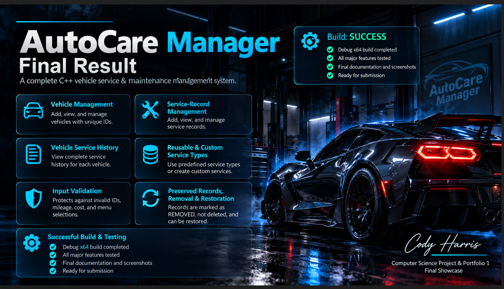

01
Programming
C++
HTML
CSS
COMPUTER SCIENCE • SOFTWARE ENGINEERING • AI SYSTEMS
Hello, I'm Cody Harris.
I am a Computer Science student and software developer with a foundation in Information Technology and hands-on experience developing structured applications in C++. My academic work has strengthened my skills in object-oriented programming, systems programming, debugging, software design, version control, and technical problem-solving.
I am continuing to expand my knowledge in software engineering and artificial intelligence with a long-term focus on developing intelligent, reliable, and scalable software systems for advanced technologies.
Software Engineering + AI Systems
01 // ABOUT
My background combines Information Technology, technical operations, professional leadership, and an expanding foundation in Computer Science and software development.
Through my studies at Full Sail University, I have gained hands-on experience designing, developing, debugging, testing, and documenting software applications. My coursework has strengthened my understanding of object-oriented programming, systems programming, data structures, input validation, application architecture, and Git-based development workflows.
I approach software development with an emphasis on organized code, maintainability, practical problem-solving, and building systems that can evolve as requirements change.
As I continue advancing in Computer Science, I am particularly interested in software engineering, artificial intelligence, automation, robotics, intelligent systems, and technologies that connect software with real-world applications.
02 // TECHNICAL CAPABILITIES
Technologies and development practices I have used through academic projects, technical coursework, and independent development.
C++
HTML
CSS
Object-Oriented Programming
Systems Programming
Data Structures
Input Validation
Debugging & Testing
Visual Studio
Git
GitHub
GitHub Projects
Branch-Based Development
Pull Requests
Issue Tracking
Milestone Planning
Technical Documentation
Information Technology
Hardware & Software Troubleshooting
Networking Fundamentals
Systems Administration Concepts
Software Engineering
Artificial Intelligence
Intelligent Systems
Automation & Robotics
03 // FEATURED DEVELOPMENT
Selected software projects demonstrating programming, application design, debugging, version control, and structured development.

FEATURED PROJECTC++ • OBJECT-ORIENTED PROGRAMMING • SOFTWARE DESIGN
Vehicle Service & Maintenance Management System
AutoCare Manager is a C++ console application designed to organize vehicles, service records, maintenance history, and reusable service types. The project was developed through an iterative, milestone-based software development process using Visual Studio and GitHub.
One of the key design challenges was determining how service records should be removed without destroying historical maintenance information. Instead of permanently deleting records from the underlying data structure, I implemented a soft-removal system that changes the record's status while preserving its history. The design was later expanded with restoration functionality so accidentally removed records could be returned to active status.
AutoCare Manager strengthened my understanding of class interaction, object-oriented design, vectors, input validation, debugging, application refactoring, and structured software development. It also provided practical experience using GitHub as a development and project-management platform rather than simply as code storage.
CONTINUED DEVELOPMENT
This portfolio will continue to expand as I complete additional Computer Science coursework and develop projects in software engineering, artificial intelligence, automation, and intelligent systems.
04 // EDUCATION
COMPLETED
Full Sail University
Completed April 2026
CURRENT
Full Sail University
Currently Enrolled
CONTINUING PATH
Planned continued study with an emphasis on artificial intelligence and advanced software systems.
05 // PROFESSIONAL DIRECTION
My objective is to continue developing the technical depth required for software engineering roles where I can contribute to application development, systems design, debugging, automation, and emerging AI-driven technologies.
I am particularly interested in opportunities that allow me to write code, collaborate with technical teams, solve complex problems, and continue expanding my experience with production-oriented software development.
Long term, I intend to apply software engineering and artificial intelligence to intelligent machines, autonomous systems, robotics, automotive technology, and other advanced engineering environments.
Software Engineer
Software Developer
C++ Developer
Software Engineering Intern
AI / Intelligent Systems
Technical Systems Development
06 // CONTACT
I am interested in software development, software engineering, technical internships, and opportunities where I can continue strengthening my programming experience while contributing to meaningful technology projects.